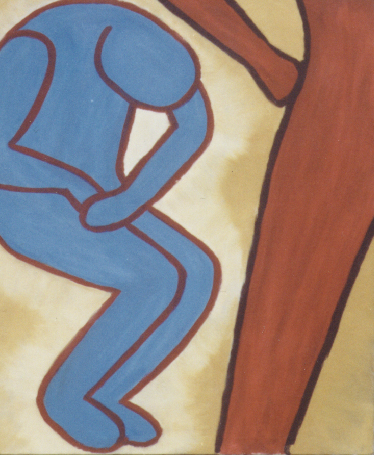

|
|
|
|
|
|
| The Fifth (of 6) | |
|  | The Consequence
No, I do not hate men. No, I am not a feminist. In the literary sense, this painting is the climax of the series. The first painting introduced the setting, the characters and something about their relationship. A conflict began to build, until the confrontation. But now, it is the 'woman' who is in control. The essense of the woman that dominates. I was not building to this scene. I had no idea where the story was going when I started. While planning the fourth painting I had some idea how I wanted the series to end, and I had to get there somehow. I wanted it to be clear from the paintings what was happening, and in this, the fifth painting, I wanted it to be clear that the woman had taken action to liberate herself. What more clear way to demonstrate this? My point was to show that a story can be told through body language alone, and I think this painting is pretty straightforward. Oh, and I don't really like this one all that much. I think of it as uninspired. |
I'd love to hear any of your thoughts or interpretations of my art.
If you have a collection of art works, I'd love to see it too.
email me